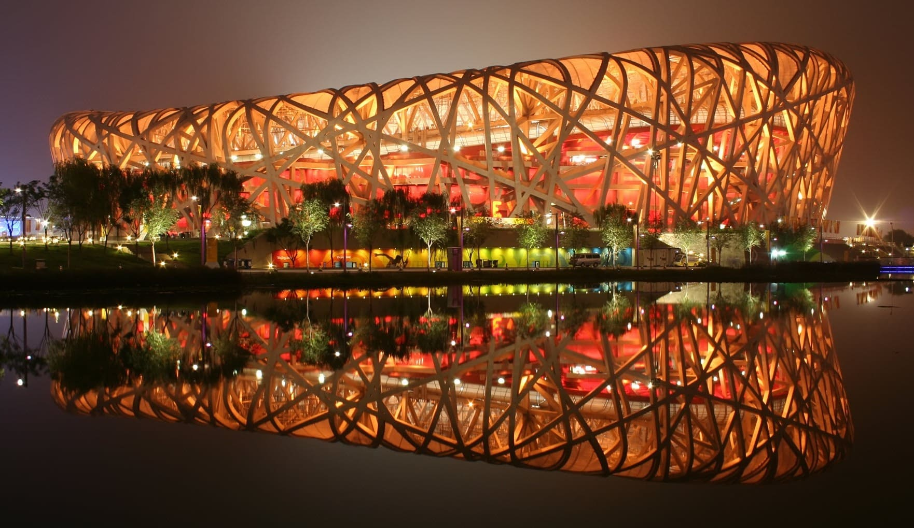
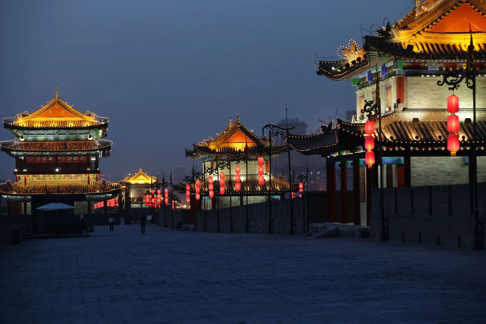
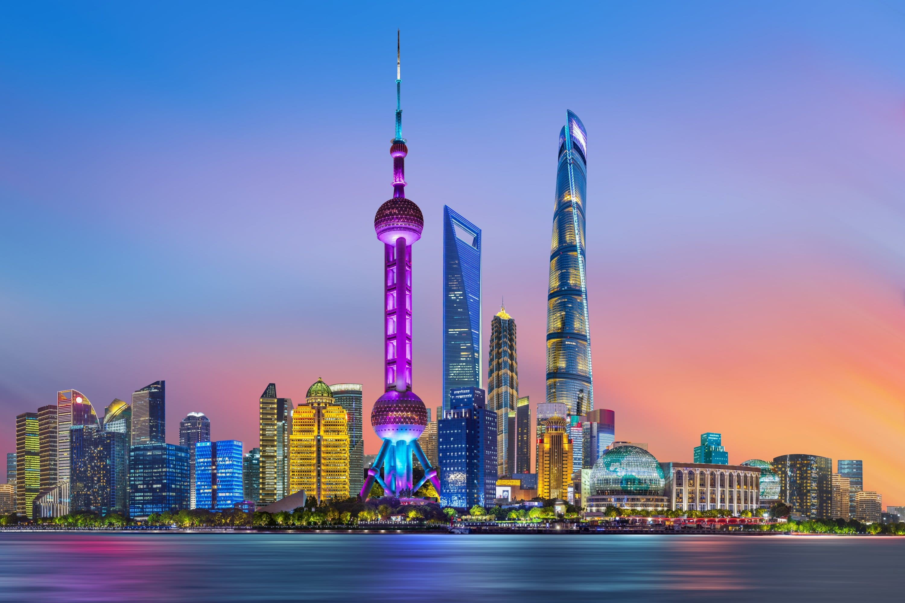
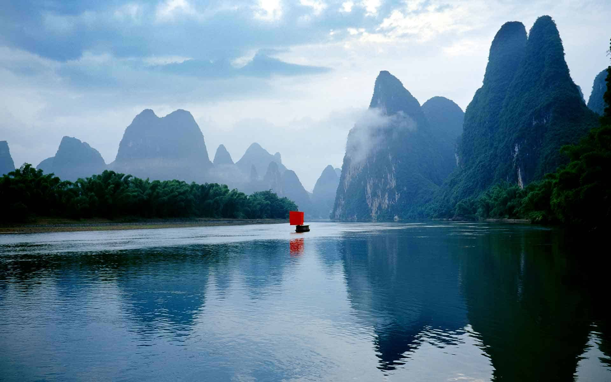

China - Ancient Civilization and Modern Marvels

Introduction
China, in East Asia, is the world's most populous country and home to thousands of years of history. It offers a fascinating mix of ancient culture, natural wonders, and modern cities.
From the Great Wall to the futuristic skyline of Shanghai, China provides visitors with a diverse and immersive experience, combining heritage, cuisine, and innovation.
Quick Facts
- Capital: Beijing
- Population: Approximately 1.4 billion
- Language: Mandarin Chinese
- Currency: Renminbi (Yuan)
- Best Time to Visit: Spring (March-May) and Autumn (September-November)
Explore Major Destinations
Jump to a specific destination
\r\n
Beijing

Region: Northern China
Beijing, the capital of China, blends imperial history with modern architecture. It is the political, cultural, and educational center of the country.
Visit the Forbidden City, Tiananmen Square, the Temple of Heaven, and enjoy traditional Peking Duck. The city offers museums, parks, and cultural experiences.
Must-See Attractions
- Forbidden City - Imperial palace with vast history
- Tiananmen Square - Iconic city square
- Temple of Heaven - Historic religious complex
- Great Wall (near Beijing) - Sections like Badaling and Mutianyu
- Summer Palace - Classical gardens and lake
Back to top
Xi'an

Region: Northwest China
Xi'an is one of China's oldest cities and the starting point of the Silk Road. It is famous for its rich history and cultural heritage.
See the Terracotta Army, explore the Ancient City Wall, and visit the Big Wild Goose Pagoda. Xi'an offers traditional food like biangbiang noodles and dumplings.
Must-See Attractions
- Terracotta Army - Thousands of life-sized sculptures of warriors
- Ancient City Wall - Historic fortifications around Xi'an
- Big Wild Goose Pagoda - Tang dynasty Buddhist pagoda
- Muslim Quarter - Bustling food and cultural area
- Shaanxi History Museum - Comprehensive local history collection
Back to top
Shanghai

Region: Eastern China
Shanghai is a global financial hub known for its futuristic skyline, colonial architecture, and vibrant culture. It combines traditional gardens with modern skyscrapers.
Explore The Bund, Yuyuan Garden, Nanjing Road shopping, and enjoy river cruises on the Huangpu River. Shanghai offers dynamic nightlife and international cuisine.
Must-See Attractions
- The Bund - Historic waterfront area
- Oriental Pearl Tower - Iconic skyscraper with observation decks
- Yuyuan Garden - Classical Chinese garden
- Nanjing Road - Major shopping street
- Shanghai Museum - Exhibits of ancient Chinese art
Back to top
Guilin

Region: Southern China
Guilin is famous for its dramatic karst landscape, rivers, and picturesque scenery. It is ideal for nature lovers and outdoor activities.
Take a Li River cruise, explore Reed Flute Cave, climb Elephant Trunk Hill, and visit nearby Yangshuo for rural landscapes and cycling adventures.
Must-See Attractions
- Li River - Scenic river cruises with karst peaks
- Reed Flute Cave - Limestone cave with colorful lighting
- Elephant Trunk Hill - Iconic rock formation
- Yangshuo - Rural countryside with rice paddies and hills
- Longji Rice Terraces - Stunning terraced farming landscapes
Back to top
Travel Tips for China
- Visa: Most visitors need a visa - apply in advance.
- Cash & Cards: Carry cash (Renminbi) as some places do not accept cards.
- Language: Mandarin is dominant; English is limited outside major cities.
- Transport: High-speed trains connect most major cities efficiently.
- Culture: Respect local customs, temples, and public etiquette.
← Back to Asia | Home